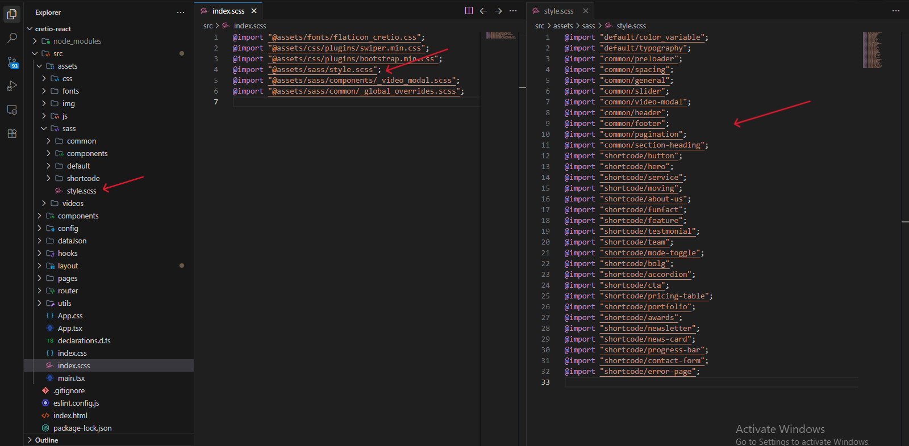
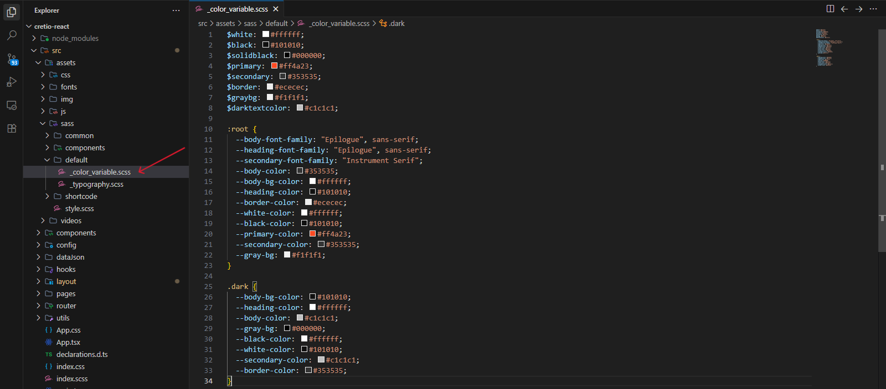
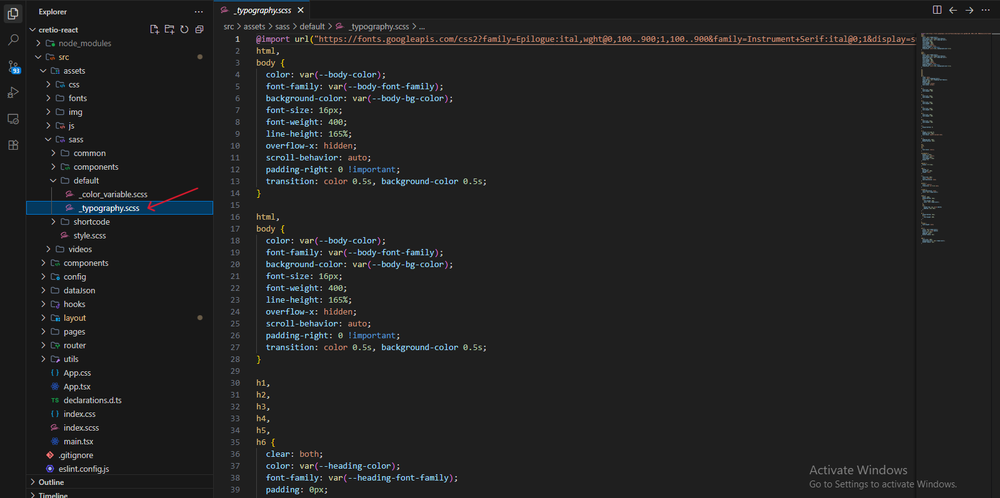

For any support please don't hesitate to contact us at
Support Center. We
provide 15
hours real-time support for our
customers.
We would like to thank you for choosing Cretio.
Getting started
Thank you very much for purchasing the template. We've put a lot of hard work into it, and we
hope you love it as much as we do. As far as the documentation is concerned, we have tried to
cover as much as possible to help you get your new template up and running and to help you
customise it. If you have any questions that are beyond the scope of this help file, please feel
free to drop us an email. Thanks so much!
Requirements
There are system requirements in order to install and
setup Cretio template and its components properly.
Make sure that you are installed
node.js and npm.
After purchasing Cretio template on themeforest.net
with your Envato account, go to your Download page. You
can choose to download Cretio template package which
contains the following files:
The contents of the template package downloaded from
ThemeForest
cretio-react - An React js Template
file. this file you can edit and use for your
business.
cretio-react-documentation - This folder
contains what you are reading now :)
React Installation
Please follow the instructions to see how
you can install the project on your local machine:
For local host -
Open your terminal / command prompt in the project root
Run: npm install
Run: npm run dev (to start the dev server at
http://localhost:5173)
For Production Build -
Open your terminal
Run: npm run build (this will generate the dist folder in the
root directory)
To change your Site title Favicon and Page Titles; open the cretio-react-documentation in your
editor and go to the location by following screenshot which are given bellow:
Update Site Title
Navigate to the root folder and open index.htmlOpen the
file . Locate the <title> tag inside the
<head> section and
update the text to your desired site name.
Manage Favicon
Replace the default icon file at srcassetsimglogofavicon.svgReplace the
file with your custom icon.
Change Logo
To update the logos across the entire site, change the following files:
You can change header logo hereYou can change header & sidebar logo hereYou can change footer logo here
Change Page Title
To change the main heading (title) of an individual page, go to srcpages and open the file for the page you want to edit
(e.g., About.tsx, Services.tsx). Then locate the Breadcrumb
component and change the title and highlightWords (optional) to your
desired text.
You can change page title here
Customize Menu
The navigation menu is dynamically generated from a JSON configuration file. To manage your menu
items, follow these steps:
Navigate to: srcdataJsonnavItemsList.jsonOpen the
file
Then customize the menu
Customize the menu
Customize Footer
To customize the footer data, follow these steps:
From the project folder, go to
srclayoutfooterfooter.tsx
Then customize the footer settings (Social links, Contact info, etc.) directly in the
constants at the top of the file.
Customize the footer
Customize Blog Data
To manage your blog posts, follow these steps:
From the project folder, go to
srcdataJsonblogsData.jsonOpen the file
Then customize the blog data or append new objects to the array (ensure each has a unique
id).
Customize the blog
Customize Services List Data
To manage your services data (including section headers), follow these steps:
From the project folder, go to
srcdataJsonservicesData.jsonOpen the file
Then customize the sectionInfo and mainServices arrays to update your content.
Customize the services
Customize Team List Data
To manage your team members across different sections, follow these steps:
From the project folder, go to
srcdataJsonteamMembersData.jsonOpen the file
Then customize the member profiles in the standardTeam or marketingTeam arrays.
Customize the team
Customize Portfolio Data
To manage your projects and categories, follow these steps:
From the project folder, go to
srcdataJsonprojectsData.jsonOpen the file
Then customize the categories and mainProjects arrays. Ensure project tags match the filter selectors defined in categories.
Customize the portfolio
Customize Error Pages
To update the error messages or visual elements, follow these steps:
From the project folder, go to
srcpagesErrorPages404.tsx
Then customize the error headline, description, and "Back to Home" button text directly in the JSX.
Customize the 404 error page
Customize Header
The header is a dynamic component. You can modify the
header and sidebar markup there.
From the project folder go to
srclayout headerheader.tsxOpen the menu you want to use
Then customize the header and navigation data
Customize the header
SASS
To change SASS and setting you can change by following
this screenshot here.
From the project folder go to
src index.scssOpen the file
From the project folder go to
src assetssassOpen the folder
Then customize the sass data

Customize the SASS
Colors
To change color and setting you can change by following
this screenshot here.
From the project folder go to
src assetssassdefault_color_variable.scssOpen the file
Then customize the color data

Customize the color
Typography
To change Typography and setting you can change by
following this screenshot here.
From the project folder go to
src assetssassdefault_typography.scssOpen the file
Then customize the Typography data

Customize the Typography
Support
If you face any issue please contact us at
Support
Ticket. We
provide 15 hours real-time support for our
customers.